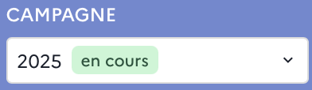
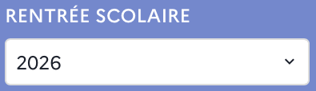

Filtres contextuels
- Campagne⚓
Ce filtre permet de choisir la campagne. Par défaut, la campagne en cours est affichée.
Remarque : Première campagne⚓
La première campagne disponible dans ORION est la campagne 2023.
- Rentrée scolaire⚓
On peut filtrer sur les rentrées scolaires. Pour une campagne donnée, la grande majorité des demandes porte sur la campagne de l’année suivante (ex : rentrée scolaire 2026 pour la campagne 2025). Néanmoins, une minorité de demandes peut aussi concerner :
Des rentrées scolaires ultérieures (ex : pour la campagne 2025, 2027 et au-delà) ;
La rentrée scolaire de la même année, dans le cas des ajustements de rentrée (ex : pour la campagne 2025, la rentrée scolaire 2025) ;
- Région & académie⚓
Il est également possible de filtrer sur la région et l’académie. On a une visibilité territoriale plus ou moins étendue selon le périmètre et le profil utilisateur.